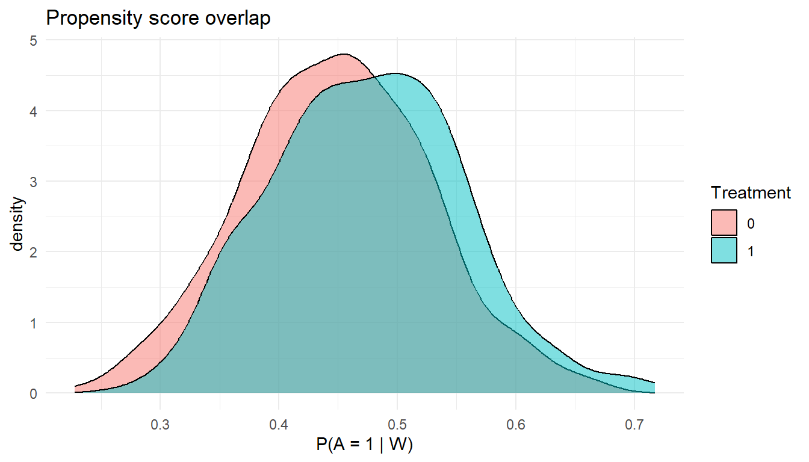

library(tidyverse)
library(SuperLearner)
library(tmle)11 A Practical Workflow for Real-World Evidence Analysis
From question to answer in 11 steps
11.1 Why you need a workflow
If you have been reading this book from the beginning, you now have a rich toolkit: DAGs for encoding assumptions (Chapter 1.2), formal estimands for pinning down what you want to estimate (Chapter 1.3), target trial emulation for structuring your question (Chapter 1.4), G-computation (Chapter 2.1), IPTW (Chapter 2.2), TMLE (Chapter 2.3), and Super Learner for flexible nuisance estimation (Chapter 2.5). Each chapter taught one piece of the puzzle. But how do you put the pieces together for a real analysis?
That is the purpose of this chapter. We present an 11-step workflow that takes you from a vague clinical question (“Do statins prevent heart attacks?”) to a defensible causal estimate with valid inference. The workflow is not tied to any single estimator; it works whether you choose IPTW, G-computation, or TMLE. However, we will illustrate it end-to-end with TMLE and Super Learner, the combination we recommend for most applied work.
The workflow is a checklist, not a straitjacket
Real analyses are messy. You will revisit earlier steps as you learn more about the data. The point of the workflow is to ensure you do not skip a critical step, not to enforce a rigid linear process.
11.2 The 11-step workflow at a glance
| Step | Action | Key chapter |
|---|---|---|
| 1 | Define the causal question and target trial | Chapter 1.4 |
| 2 | Specify the estimand | Chapter 1.3 |
| 3 | Draw the DAG | Chapter 1.2 |
| 4 | State the identification assumptions | Chapter 1.3 |
| 5 | Check overlap and data support | Chapter 3.2 |
| 6 | Choose the estimator | Chapters 2.1–2.3 |
| 7 | Fit nuisance models with Super Learner | Chapter 2.5 |
| 8 | Estimate the causal effect | Chapter 2.3 |
| 9 | Run diagnostics | Chapter 3.5 |
| 10 | Run sensitivity analyses | Chapter 3.12 |
| 11 | Interpret the result for the target population | Chapter 1.3 |
We now walk through each step in detail.
11.3 Step 1: Define the causal question and target trial
What to do. Write down the causal question in plain language, then formalize it as a target trial protocol specifying the population, the treatment strategies being compared, the outcome, and the follow-up period. This forces precision: “Do statins work?” becomes “Among adults aged 50 and older with hyperlipidemia and no prior cardiovascular event, does initiating atorvastatin (versus no statin) within 6 months of diagnosis reduce the 5-year risk of major adverse cardiovascular events (MACE)?”
Full details. See Chapter 1.4 on the target trial framework and Chapter 1.2 on structuring a causal question using the PICO format.
Common mistake
Jumping straight to modeling without writing down the question. If you cannot state the target trial protocol in one paragraph, your analysis plan is not ready.
11.4 Step 2: Specify the estimand
What to do. Translate the causal question into a formal statistical quantity. For a point treatment, this is typically the Average Treatment Effect (ATE), the Average Treatment Effect on the Treated (ATT), or a conditional effect within a subgroup. Write the estimand using potential-outcome notation so there is no ambiguity.
For example, the ATE on the risk difference scale is:
\[\psi = E[Y^1] - E[Y^0]\]
where \(Y^a\) is the counterfactual outcome under treatment \(a\).
Full details. See Chapter 1.3 for a taxonomy of estimands and guidance on choosing between ATE, ATT, and conditional effects.
Common mistake
Conflating the estimand with the estimator. The ATE is a property of the population (the estimand); TMLE is a procedure for estimating it (the estimator). Changing the estimator should not change what you are trying to learn.
11.5 Step 3: Draw the DAG
What to do. Draw a directed acyclic graph (DAG) that encodes your assumptions about the causal structure linking treatment, outcome, confounders, mediators, and any sources of selection bias. Use the DAG to identify the minimal sufficient adjustment set, that is, the smallest set of variables you need to condition on to block all backdoor paths from treatment to outcome.
Full details. See Chapter 1.2 for DAG construction and the backdoor criterion.
Common mistake
Including colliders or mediators in your adjustment set. If a variable is a consequence of both treatment and outcome, conditioning on it opens a spurious path. Review Chapter 1.2 for collider bias.
11.6 Step 4: State the identification assumptions
What to do. Explicitly list the causal assumptions required for your estimand to be identified from the observed data. For most point-treatment analyses, these are: (1) consistency (the observed outcome under treatment \(a\) equals the potential outcome \(Y^a\)), (2) conditional exchangeability (no unmeasured confounding given the adjustment set), and (3) positivity (every unit has a nonzero probability of receiving each treatment level, given covariates).
Full details. Chapter 1.3 discusses these assumptions in depth. Chapter 3.2 focuses specifically on positivity.
Common mistake
Treating these assumptions as mere formalities. Every assumption is a place where the analysis can go wrong. State them, justify them with subject-matter knowledge, and plan sensitivity analyses for the ones you cannot verify.
11.7 Step 5: Check overlap and data support
What to do. Before fitting any model, examine whether the data actually support the comparisons your estimand requires. Compute the propensity score (the probability of treatment given confounders) and check that both treated and untreated individuals exist across the full range of confounder values. Look for near-violations of positivity, that is, regions where the propensity score is very close to 0 or 1. If practical positivity violations are severe, consider trimming, redefining the target population, or switching to the ATT.
Full details. See Chapter 3.2 on diagnosing and addressing positivity violations.
Common mistake
Ignoring propensity scores near 0 or 1. Extreme weights in IPTW or unstable TMLE updates are a symptom of positivity problems. Address the root cause rather than simply truncating weights.
11.8 Step 6: Choose the estimator
What to do. Select an estimation strategy based on the estimand, the complexity of the data, and the assumptions you are willing to make. The table below provides a decision guide.
| Consideration | G-computation | IPTW | TMLE |
|---|---|---|---|
| Doubly robust (two chances to get it right) | No | No | Yes |
| Valid inference with machine learning | No | No | Yes |
| Naturally bounded estimates (for probabilities) | Yes | Not always | Yes |
| Targets substitution estimand directly | Yes | No | Yes |
| Easy to combine with Super Learner | Possible | Possible | Designed for it |
| Recommended for most RWE analyses | Yes |
When to use each:
- G-computation (Chapter 2.1): Useful for understanding the outcome model or for pedagogical purposes. Works well when you are confident in the outcome model and do not need machine-learning-based nuisance estimation.
- IPTW (Chapter 2.2): Natural choice when the treatment mechanism is well understood, for example in a well-characterized randomization scheme. Less stable when propensity scores are extreme.
- TMLE (Chapter 2.3): The recommended default. Doubly robust, compatible with Super Learner, and provides valid confidence intervals even when nuisance models are fit with adaptive algorithms.
Common mistake
Choosing the estimator before specifying the estimand. The estimand should drive the choice, not the other way around.
11.9 Step 7: Fit nuisance models with Super Learner
What to do. Use Super Learner (Chapter 2.5) to fit the outcome model \(\bar{Q}(A, W) = E[Y | A, W]\) and the propensity score model \(g(W) = P(A = 1 | W)\). Define a library of candidate learners that includes both simple parametric models (logistic regression, elastic net) and flexible data-adaptive methods (random forests, gradient boosting). Super Learner will select the optimal combination via cross-validation.
Full details. Chapter 2.5 covers Super Learner construction, candidate library selection, and cross-validation strategies.
Common mistake
Using only a single logistic regression for nuisance estimation. This throws away the key advantage of TMLE: its ability to leverage flexible machine learning while retaining valid inference.
11.10 Step 8: Estimate the causal effect
What to do. Pass the fitted nuisance models to the TMLE (or your chosen estimator) and compute the point estimate and confidence interval. For TMLE, this involves the “targeting” step (a cleverly constructed fluctuation of the initial outcome model) followed by substitution to obtain the estimate.
Full details. Chapter 2.3 walks through the TMLE algorithm step by step. Chapter 2.4 provides additional worked examples.
Common mistake
Reporting only a point estimate without a confidence interval. TMLE provides influence-function-based standard errors, so there is no reason to skip inference.
11.11 Step 9: Run diagnostics
What to do. After obtaining the estimate, run a battery of diagnostics. Check whether the propensity score distribution is reasonable, examine the TMLE fluctuation parameter (epsilon) for signs of instability, and look at the influence curve for outliers. If you used Super Learner, examine the cross-validated risk and learner weights to ensure the ensemble performed well.
Full details. Chapter 3.5 covers advanced diagnostics for targeted learning analyses.
Common mistake
Treating diagnostics as optional. A TMLE estimate that passes diagnostics is far more trustworthy than one that does not. If diagnostics reveal problems, revisit earlier steps before reporting results.
11.12 Step 10: Run sensitivity analyses
What to do. Assess how sensitive your conclusions are to violations of the key assumptions. For unmeasured confounding, compute an E-value or conduct a formal bias analysis to determine how strong a confounder would need to be to explain away your result. Consider varying the adjustment set, the Super Learner library, or the trimming threshold to see if results are robust.
Full details. Chapter 3.12 discusses sensitivity analysis methods for causal inference.
Common mistake
Treating sensitivity analysis as a separate, optional exercise. If the E-value shows that even a modest unmeasured confounder could nullify the result, that is critical information for interpretation.
11.13 Step 11: Interpret the result for the target population
What to do. Translate the statistical result back into a clinical or public health statement. Be precise about the population, the intervention, and the scale of the effect. Acknowledge limitations, including the assumptions required and the results of sensitivity analyses. If the analysis targets the ATE, do not overstate by claiming the result applies to a specific subgroup without evidence of effect modification (see Chapter 3.4).
Full details. Chapter 1.3 on aligning estimands with clinical questions. Chapter 3.4 on effect modification and subgroup analyses.
Common mistake
Using causal language (“statins prevent MACE”) without qualifying the assumptions required. Prefer statements like: “Under the assumption of no unmeasured confounding (conditional on the measured covariates), statin initiation was associated with a 3.2 percentage point reduction in 5-year MACE risk.”
11.14 Worked mini-example: Statins and MACE
We now walk through all 11 steps on a small simulated dataset. This example is intentionally compact; a real analysis would involve more variables, a larger sample, and extensive diagnostics.
11.14.1 Steps 1–4: Question, estimand, DAG, and assumptions
# -- Step 1: Causal question --
# Among adults with hyperlipidemia, does initiating a statin (A=1)
# versus no statin (A=0) reduce 5-year risk of MACE (Y)?
# -- Step 2: Estimand --
# ATE on the risk difference scale: psi = E[Y(1)] - E[Y(0)]
# -- Step 3: DAG --
# W1 (age) -> A, W1 -> Y
# W2 (ldl) -> A, W2 -> Y
# W3 (smoking) -> Y, W3 -> A
# A -> Y
# Minimal sufficient adjustment set: {W1, W2, W3}
# -- Step 4: Assumptions --
# Consistency, conditional exchangeability given {W1, W2, W3}, positivity
set.seed(2025)
n <- 1000
# Simulate confounders
W1 <- rnorm(n, mean = 60, sd = 10) # age
W2 <- rnorm(n, mean = 150, sd = 30) # LDL cholesterol
W3 <- rbinom(n, 1, 0.25) # smoking (1 = yes)
# Treatment assignment (confounded)
prob_A <- plogis(-3 + 0.02 * W1 + 0.01 * W2 + 0.3 * W3)
A <- rbinom(n, 1, prob_A)
# Outcome (5-year MACE), protective effect of statin
prob_Y <- plogis(-4 + 0.04 * W1 + 0.005 * W2 + 0.6 * W3 - 0.5 * A)
Y <- rbinom(n, 1, prob_Y)
dat <- tibble(W1, W2, W3, A, Y)
glimpse(dat)
#> Rows: 1,000
#> Columns: 5
#> $ W1 <dbl> 66.20757, 60.35641, 67.73154, 72.72489, 63.70975, 58.37146, 63.9711…
#> $ W2 <dbl> 176.21941, 87.69998, 131.76049, 107.34008, 127.98406, 128.52549, 12…
#> $ W3 <int> 1, 0, 0, 1, 0, 0, 1, 0, 0, 0, 0, 0, 0, 0, 0, 0, 0, 1, 0, 0, 0, 0, 0…
#> $ A <int> 1, 0, 1, 1, 0, 0, 1, 0, 1, 1, 1, 1, 0, 0, 1, 0, 0, 1, 0, 1, 0, 1, 1…
#> $ Y <int> 0, 0, 0, 1, 0, 0, 1, 0, 0, 1, 0, 0, 0, 0, 0, 1, 0, 1, 1, 0, 0, 0, 1…11.14.2 Step 5: Check overlap
# Fit a simple propensity score model for diagnostics
ps_model <- glm(A ~ W1 + W2 + W3, data = dat, family = binomial)
dat <- dat %>% mutate(ps = predict(ps_model, type = "response"))
# Visualize overlap
ggplot(dat, aes(x = ps, fill = factor(A))) +
geom_density(alpha = 0.5) +
labs(
title = "Propensity score overlap",
x = "P(A = 1 | W)",
fill = "Treatment"
) +
theme_minimal()
# Check for practical positivity violations
summary(dat$ps)
#> Min. 1st Qu. Median Mean 3rd Qu. Max.
#> 0.2276 0.4034 0.4592 0.4600 0.5150 0.7176
Note
In this simulated example, overlap is good by construction. In real data, you should look for regions with little or no overlap and consider trimming or redefining the target population if needed.
11.14.3 Step 6: Choose the estimator
We choose TMLE because it is doubly robust and pairs naturally with Super Learner (see Table 11.2 above).
11.14.4 Steps 7–8: Fit nuisance models and estimate the effect
# Define Super Learner library
sl_lib <- c("SL.glm", "SL.ranger", "SL.earth")
# Run TMLE with Super Learner for both nuisance models
tmle_fit <- tmle(
Y = dat$Y,
A = dat$A,
W = dat %>% select(W1, W2, W3),
Q.SL.library = sl_lib,
g.SL.library = sl_lib,
family = "binomial"
)
# Extract results
tmle_fit
#> Marginal mean under treatment (EY1)
#> Parameter Estimate: 0.2464
#> Estimated Variance: 0.00037416
#> p-value: <2e-16
#> 95% Conf Interval: (0.20849, 0.28431)
#>
#> Marginal mean under comparator (EY0)
#> Parameter Estimate: 0.31537
#> Estimated Variance: 0.00038137
#> p-value: <2e-16
#> 95% Conf Interval: (0.27709, 0.35365)
#>
#> Additive Effect
#> Parameter Estimate: -0.068967
#> Estimated Variance: 0.00073631
#> p-value: 0.011034
#> 95% Conf Interval: (-0.12215, -0.015784)
#>
#> Additive Effect among the Treated
#> Parameter Estimate: -0.07037
#> Estimated Variance: 0.00078679
#> p-value: 0.012115
#> 95% Conf Interval: (-0.12535, -0.015394)
#>
#> Additive Effect among the Controls
#> Parameter Estimate: -0.06608
#> Estimated Variance: 0.00072388
#> p-value: 0.014047
#> 95% Conf Interval: (-0.11881, -0.013348)
#>
#> Relative Risk
#> Parameter Estimate: 0.78131
#> Variance(log scale): 0.0097498
#> p-value: 0.012445
#> 95% Conf Interval: (0.64384, 0.94814)
#>
#> Odds Ratio
#> Parameter Estimate: 0.70981
#> Variance(log scale): 0.018553
#> p-value: 0.011855
#> 95% Conf Interval: (0.5435, 0.92701)# Tidy summary of the ATE
ate_est <- tmle_fit$estimates$ATE
tibble(
estimand = "ATE (risk difference)",
estimate = ate_est$psi,
ci_lower = ate_est$CI[1],
ci_upper = ate_est$CI[2],
pvalue = ate_est$pvalue
)
#> # A tibble: 1 × 5
#> estimand estimate ci_lower ci_upper pvalue
#> <chr> <dbl> <dbl> <dbl> <dbl>
#> 1 ATE (risk difference) -0.0690 -0.122 -0.0158 0.011011.14.5 Step 9: Diagnostics
# Examine the propensity score from TMLE's internal model
g_scores <- tmle_fit$g$g1W
summary(g_scores)
#> Min. 1st Qu. Median Mean 3rd Qu. Max.
#> 0.2484 0.4038 0.4562 0.4600 0.5138 0.7023
# Check for extreme weights (should not have values near 0 or 1)
cat("Proportion with g < 0.05:", mean(g_scores < 0.05), "\n")
#> Proportion with g < 0.05: 0
cat("Proportion with g > 0.95:", mean(g_scores > 0.95), "\n")
#> Proportion with g > 0.95: 0
Note
In a full analysis, you would also inspect the Super Learner cross-validated risk, examine influence function values for outliers, and compare estimates across different Super Learner libraries. See Chapter 3.5 for a thorough diagnostic checklist.
11.14.6 Step 10: Sensitivity analysis
# Compute the E-value for the point estimate
# E-value = RR + sqrt(RR * (RR - 1)) where RR is the risk ratio
# For a protective effect, we invert to get RR > 1 for the E-value formula
# Convert risk difference to approximate risk ratio
p0 <- mean(dat$Y[dat$A == 0]) # baseline risk
p1 <- p0 + ate_est$psi # risk under treatment
rr <- p0 / p1 # invert so RR > 1
evalue <- rr + sqrt(rr * (rr - 1))
cat("Approximate E-value:", round(evalue, 2), "\n")
#> Approximate E-value: 1.91
cat("Interpretation: an unmeasured confounder would need to be\n")
#> Interpretation: an unmeasured confounder would need to be
cat("associated with both treatment and outcome by a risk ratio of at\n")
#> associated with both treatment and outcome by a risk ratio of at
cat("least", round(evalue, 2), "to fully explain away the observed effect.\n")
#> least 1.91 to fully explain away the observed effect.11.14.7 Step 11: Interpret
Example interpretation
Under the assumptions of consistency, conditional exchangeability given age, LDL cholesterol, and smoking status, and positivity, statin initiation was estimated to reduce 5-year MACE risk by approximately 6.9 percentage points (95% CI: -12.2 to -1.6). The E-value suggests that an unmeasured confounder of moderate strength could potentially explain this finding, so the result should be interpreted with caution.
11.15 Decision flowchart for estimator selection
Below is a simplified decision guide. Start at the top and follow the branches.
┌─────────────────────────┐
│ Is the treatment point │
│ exposure (single time)? │
└────────┬────────────────┘
│
┌───Yes─┘──No──┐
│ │
▼ ▼
┌───────────────┐ ┌──────────────────┐
│ Do you want │ │ Use longitudinal │
│ doubly robust │ │ TMLE / LTMLE │
│ estimation? │ │ (Chapter 3.9) │
└──────┬────────┘ └──────────────────┘
│
┌──Yes─┘──No──┐
│ │
▼ ▼
┌────────┐ ┌──────────────────────────┐
│ TMLE │ │ Is the outcome model │
│ (2.3) │ │ your primary concern? │
└────────┘ └──────────┬───────────────┘
│
┌──Yes─┘──No──┐
│ │
▼ ▼
┌───────────┐ ┌──────────┐
│ G-comp │ │ IPTW │
│ (2.1) │ │ (2.2) │
└───────────┘ └──────────┘
Rule of thumb
When in doubt, use TMLE with Super Learner. It is doubly robust, provides valid inference with data-adaptive estimation, and produces bounded estimates for binary outcomes. The other estimators are valuable for building intuition and for settings where TMLE is not yet implemented (for example, certain complex longitudinal designs).
11.16 Analyst checklist
Use this checklist to verify you have completed every step. You can copy it into your analysis notebook or print it out.
Printable checklist
11.17 Summary
This chapter provided a practical, 11-step workflow for conducting a causal analysis with real-world data. The workflow begins with the scientific question (not the statistical model) and proceeds through formal estimand specification, assumption documentation, data diagnostics, estimation, and interpretation. Several recurring themes are worth emphasizing:
The question drives everything. Every downstream choice (adjustment set, estimator, sensitivity analysis) flows from the causal question and estimand defined in Steps 1 and 2.
Assumptions must be stated, not hidden. The credibility of your causal conclusion rests on assumptions that cannot be tested from the data alone. Document them prominently.
Diagnostics are not optional. A TMLE estimate is only as trustworthy as the nuisance models that feed it. Check overlap, examine Super Learner performance, and inspect the influence curve.
Sensitivity analysis tells you how fragile the conclusion is. If a single modest unmeasured confounder could overturn your result, report that honestly.
TMLE with Super Learner is a strong default. It is doubly robust, accommodates flexible machine learning, and provides valid statistical inference. But it is not magic: garbage in, garbage out still applies.
The individual steps are covered in depth throughout this book. The value of this chapter is in showing how they connect into a coherent analysis plan.
11.18 Check your understanding
Test yourself on the key concepts from this chapter.
Q1: Why should you specify the estimand before choosing the estimator?
Click for answer
The estimand defines what you are trying to learn (for example, ATE vs. ATT on the risk difference scale). The estimator is the procedure for computing that quantity from data. If you choose the estimator first, you risk answering a different question than the one you care about. For instance, a naive IPTW analysis targets the ATE only under specific conditions, and if your question is really about the ATT, you need to adjust the procedure accordingly.Q2: You run TMLE and find that 15% of individuals have estimated propensity scores below 0.02. What does this suggest, and what should you do?
Click for answer
Propensity scores near 0 indicate practical positivity violations: there are covariate strata where almost no one receives the treatment (or control) being compared. This can lead to unstable estimates and inflated variance. You should (1) investigate which covariates are driving the near-zero propensity scores, (2) consider trimming the sample to regions with adequate overlap, (3) consider redefining the target population to exclude strata without data support, or (4) switch to the ATT estimand if the positivity problem is only in one direction. See Chapter 3.2 for details.Q3: Why is TMLE preferred over G-computation when using data-adaptive (machine learning) methods for nuisance estimation?
Click for answer
G-computation relies entirely on the outcome model being correctly specified. When you use machine learning to estimate the outcome model, the resulting G-computation estimator may be biased because data-adaptive methods typically converge more slowly than parametric models. TMLE adds a “targeting” step that corrects the initial outcome model estimate, making the final estimator doubly robust (consistent if either the outcome model or the propensity score model is consistent) and allowing valid influence-function-based confidence intervals even with machine learning. See Chapter 2.3 for the full argument.Q4: What is the E-value, and why is it useful in Step 10?
Click for answer
The E-value quantifies the minimum strength of association (on the risk ratio scale) that an unmeasured confounder would need to have with both the treatment and the outcome to fully explain away the observed effect. A large E-value means that only a very strong unmeasured confounder could nullify the finding, which strengthens confidence in the result. A small E-value means even a modest unmeasured confounder could explain the result, which calls for caution. It is useful because it translates the abstract concern of “unmeasured confounding” into a concrete, interpretable number. See Chapter 3.12.Q5: An analyst runs TMLE, gets a statistically significant result, and skips the diagnostic checks. What could go wrong?
Click for answer
Many things could go wrong. The propensity score model might have produced extreme weights, leading to an unstable estimate. The Super Learner might have defaulted to a single weak learner (for example, an intercept-only model), meaning the nuisance estimation was poor. The influence curve might contain extreme outliers, suggesting that a small number of observations are driving the entire estimate. Without diagnostics, the analyst has no way to assess whether the TMLE estimate is trustworthy. A statistically significant p-value does not guarantee that the model is well-specified or that the assumptions are approximately met. See Chapter 3.5 for a complete diagnostic protocol.11.19 What comes next
Now that you have a complete workflow for a single point-treatment analysis, the next chapters extend these ideas to more complex settings. Chapter 3.2 takes a deeper dive into positivity violations and practical strategies for addressing them. Chapter 3.5 provides a comprehensive diagnostic toolkit for evaluating your TMLE fits. Later chapters cover longitudinal treatments with time-varying confounding (Chapter 3.7), effect modification and subgroup analysis (Chapter 3.4), and sensitivity analysis for unmeasured confounding (Chapter 3.12). The workflow you learned here remains the backbone: each advanced topic adds detail to one or more of the 11 steps, but the overall structure stays the same.
11.20 Session info
sessionInfo()
#> R version 4.4.2 (2024-10-31 ucrt)
#> Platform: x86_64-w64-mingw32/x64
#> Running under: Windows 11 x64 (build 26200)
#>
#> Matrix products: default
#>
#>
#> locale:
#> [1] LC_COLLATE=English_United States.utf8
#> [2] LC_CTYPE=English_United States.utf8
#> [3] LC_MONETARY=English_United States.utf8
#> [4] LC_NUMERIC=C
#> [5] LC_TIME=English_United States.utf8
#>
#> time zone: America/Los_Angeles
#> tzcode source: internal
#>
#> attached base packages:
#> [1] splines stats graphics grDevices utils datasets methods
#> [8] base
#>
#> other attached packages:
#> [1] tmle_2.0.1.1 glmnet_4.1-8 Matrix_1.7-1
#> [4] SuperLearner_2.0-29 gam_1.22-5 foreach_1.5.2
#> [7] nnls_1.6 lubridate_1.9.3 forcats_1.0.0
#> [10] stringr_1.6.0 dplyr_1.1.4 purrr_1.0.2
#> [13] readr_2.1.5 tidyr_1.3.1 tibble_3.2.1
#> [16] ggplot2_4.0.2 tidyverse_2.0.0
#>
#> loaded via a namespace (and not attached):
#> [1] utf8_1.2.4 generics_0.1.3 shape_1.4.6.1
#> [4] lattice_0.22-6 stringi_1.8.7 plotmo_3.6.4
#> [7] hms_1.1.3 digest_0.6.37 magrittr_2.0.3
#> [10] evaluate_1.0.5 grid_4.4.2 timechange_0.3.0
#> [13] RColorBrewer_1.1-3 iterators_1.0.14 fastmap_1.2.0
#> [16] jsonlite_2.0.0 Formula_1.2-5 survival_3.7-0
#> [19] fansi_1.0.6 scales_1.4.0 codetools_0.2-20
#> [22] cli_3.6.5 rlang_1.1.7 plotrix_3.8-4
#> [25] withr_3.0.2 yaml_2.3.10 tools_4.4.2
#> [28] earth_5.3.4 tzdb_0.4.0 ranger_0.17.0
#> [31] vctrs_0.7.1 R6_2.6.1 lifecycle_1.0.5
#> [34] htmlwidgets_1.6.4 pkgconfig_2.0.3 pillar_1.9.0
#> [37] gtable_0.3.6 Rcpp_1.0.13-1 glue_1.8.0
#> [40] xfun_0.49 tidyselect_1.2.1 rstudioapi_0.17.1
#> [43] knitr_1.49 farver_2.1.2 htmltools_0.5.8.1
#> [46] labeling_0.4.3 rmarkdown_2.29 compiler_4.4.2
#> [49] S7_0.2.1 WeightedROC_2020.1.31